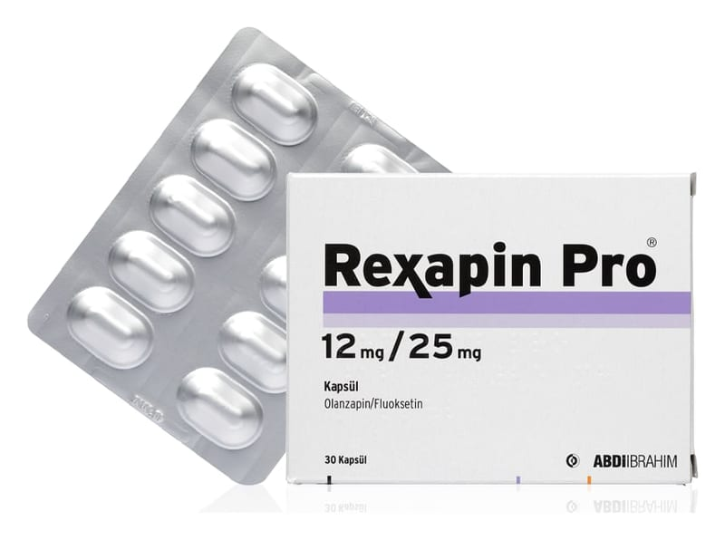

Rexapin Pro 12 mg /25 mg Kapsül, 90 Adet

Ne için kullanılır
KT · Bölüm 1REXAPİN PRO, 30 ve 90 kapsüllük ambalajlarda kullanıma sunulmaktadır. REXAPİN PRO • Bipolar I Bozukluk (Bipolar I bozukluk: manik-depresif bozukluk; mani atakları sırasında aşırı neşeli, coşkulu, bazen öfkeli bir duygudurum içinde düşünce, konuşma ve hareketlerde hızlanma ile aşırı güçlülük fikirlerinin hakim olduğu, depresif dönemlerde ise derin üzüntülü bir duygudurum içinde düşünce, konuşma ve hareketlerde yavaşlama ile değersizlik, küçüklük, güçsüzlük, isteksizlik, karamsar duygu ve düşüncelerini içeren bir ruhsal hastalıktır.) ile ilişkili depresif atakların kısa süreli tedavisinde • Erişkinlerde tedaviye dirençli depresyonun (yeterli süre ve dozda farklı depresyon tedavisinde kullanılan ilaçlarla 2 ayrı tedavi denemesine yanıt vermeyen depresyon) kısa süreli tedavisinde endikedir.